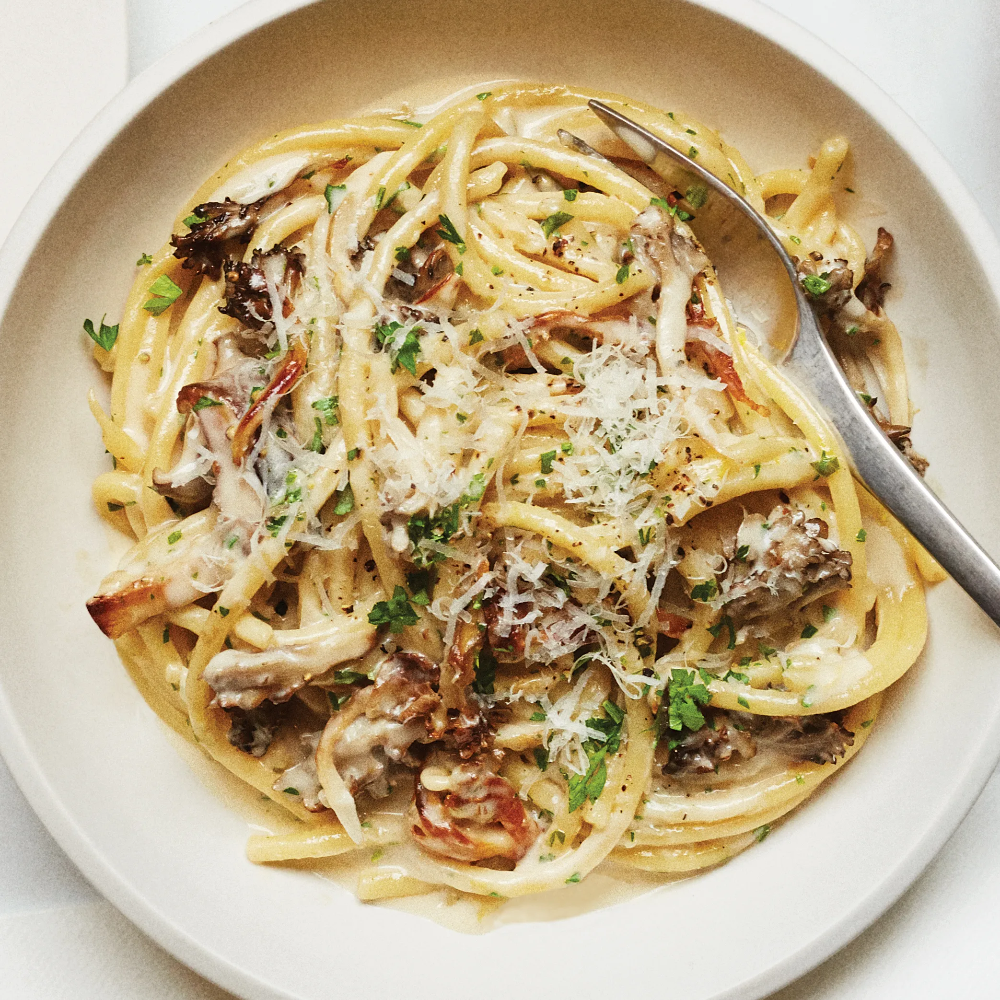
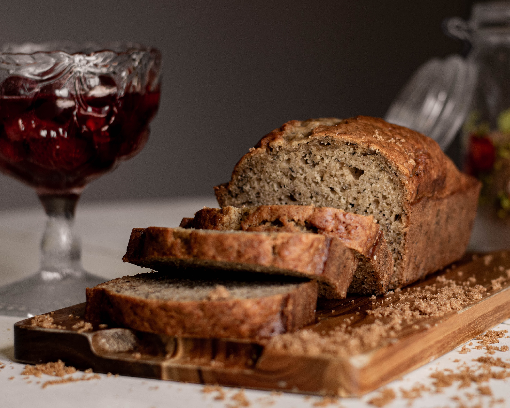

-
 Lasagna
Lasagna
This classic lasagna recipe is made with an easy meat sauce as the base. Layer the sauce with noodles and cheese, then bake until bubbly! -
 Mushroom Pasta
This mushroom pasta recipe is all about the creamy sauce and just letting the 'shrooms do their big savory umami thing. -
 Banana Bread
This banana bread recipe creates the most delicious, moist loaf with loads of banana flavor.